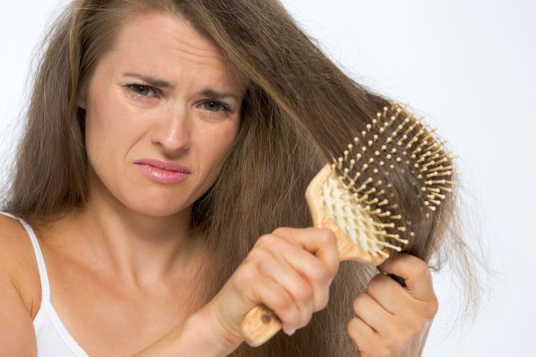

Trápia vás zničené vlasy? Na vine môže byť váš obľúbený drink
Pokiaľ popíjate iba príležitostne a na počet vypitých alkoholických nápojov ročne vám hravo postačí malá násobilka, tieto riadky sa vás netýkajú. Horšie je to v prípade, ak si bez alkoholu nedokážete predstaviť ani jeden deň.
Alkohol verzus vlasy
I keď odborníci tvrdia, že pravidelná konzumácia alkoholu v malých množstvách má pre organizmus,
a špeciálne kardiovaskulárny systém človeka, priaznivý vplyv, v prípade vlasov to zrejme až také ružové nebude.
Alkohol má na vaše vlasy rovnaký efekt, ako aj na pokožku. A to znamená, že im rozhodne neprospieva.
Pitie alkoholu dehydratuje nielen vašu pokožku, ale i vlasy. Suché vlasy sú ešte suchšie,
krehkejšie a náchylnejšie na štiepenie končekov. Nadmerná konzumácia alkoholu navyše ochudobňuje váš organizmus od zinku,
čo vedie k ich zvýšenému vypadávaniu. Ak už si predsa len nedokážete pomôcť alebo vás čaká šnúra osláv a spoločenských stretnutí,
v záujme vašich vlasov majte na pamäti niekoľko pravidiel.
S.O.S. pre vaše vlasy
Pite vodu
Počuli ste to už miliónkrát, no zopakujeme vám to opäť. Čistá voda bez bubliniek nemôže na stole počas party chýbať. To, že ste svoje telo udržiavali počas noci hydratované, ocení váš organizmus hneď v niekoľkých smeroch: ráno nebudete mať migrénu, nafúknutú tvár a v konečnom dôsledku ani vysušené vlasy.
Nepite na lačný žalúdok
Myslite na to, že jedlo je ako hubka. Absorbuje alkohol, tým spomaľuje jeho vstrebávanie do krvného obehu a v nemalej miere chráni aj vaše vlasy. Kuracie mäso, parmezán či iné kvalitné bielkoviny sú tou správnou voľbou.
Na alkohole záleží
Niet pochýb, že najmenším škodcom, čo sa alkoholických drinkov týka, je vínny strik (niektorí ľudia sú však alergickí na taníny obsiahnuté v červenom víne). Nezabudnite, že svetlejšie druhy alkoholu, akými sú povedzme vodka či gin, obsahujú menej chemických látok spôsobujúcich „opicu“. Taktiež si dávajte pozor, aby ste jednotlivé druhy alkoholu zbytočne nemiešali.
Naraňajkujte sa
Ak ste to naozaj prehnali, je veľmi dôležité dostať živiny späť do tela už pri raňajkách. Mastným jedlám dajte stopku, váš stav by ešte zhoršili. Celozrnné toasty a ovocie sú ideálne, nezabúdajte ani na vitamín C a potraviny s obsahom železa, ktoré vám pri zbavovaní sa zostatkového alkoholu pomôžu. Skúste si odpustiť kávu. Kofeín pôsobí ako diuretikum a miesto vytúženej úľavy vám spôsobí ešte väčšiu dehydratáciu. Miesto toho si odšťavte pomaranče a doprajte vášmu telu (i vlasom) poriadnu dávku vitamínu C.
Zdroj:diva.sk